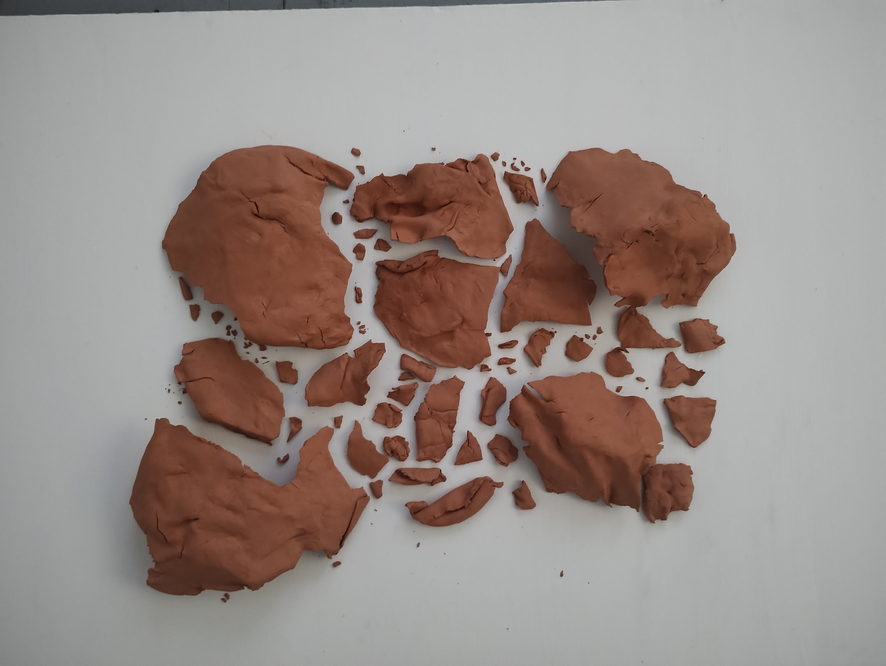

Esta primera versión de la obra nace de un sentimiento de frustración contra la arcilla. Al ser un trabajo para la universidad el tiempo estaba un poco en mi contra, me encontraba sin inspiración y no encontraba nuevas maneras para poder intervenir el material. Es así como se me recomendó transmitir este sentimiento contra la misma arcilla, pero en vez de hacerlo de una manera agresiva o que nazca de un pensamiento negativo, decidí hacer lo contrario. Manipular el material desde el afecto.
Tomé la desición de abrazarla y afectarla con mi cuerpo, demostrando de esta manera como el cuerpo puede modelar y afectar la arcilla como una herramienta más para la escultura..
Afectame I